Adobe Premiere
Introduction to Professional Video Editing
Introduction
Adobe Premiere Pro, part of the Adobe Creative Cloud package, is a powerful timeline-based video editing software application. This sophisticated editing platform is considered to be an industry standard, and is used worldwide by professionals to edit video footage.
Premiere is a good choice for video editing because it is user-friendly, it supports high resolution video and integrates easily with other creative suite applications like Photoshop and After Effects. Premiere is used to edit, manipulate, and export video projects.
About This Class
This class introduces basic concepts and functions of Adobe Premiere Pro. By the end of this class, you will have performed basic timeline edits, created a simple video, and be ready to explore and learn more advanced techniques.
This manual provides a basic introduction to the Premiere interface and explores commonly used features by guiding students through the steps in creating a simple narrative scene.
During this class, students will:
-
Become familiar with the Premiere environment and workflow
-
Gain experience performing basic video editing techniques such as importing content, organizing content, moving and cutting clips, adding titles and music, and adding transitions.
-
Gain experience exporting a final video project
This manual is intended to serve as an introduction to the application and video editing in general. In order to explore more advanced techniques, students should consider exploring the "Advanced Tools" of this manual or checking out LinkedIn Learning.
Premiere Interface and Navigation
Creating a New Project
-
Open Premiere Pro by clicking on the purple Premiere icon.
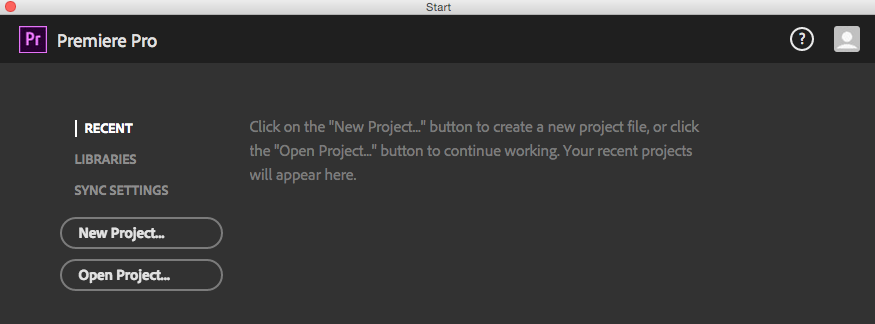
-
Click New Project... to open a new dialog box.
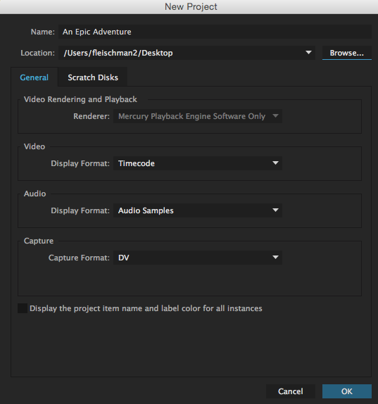
The general settings can be left as is for any basic project, but make sure to change the Name and Location of your project for easy access later on.
-
Name the project something that fits expectations. Follow any naming guides your instructor has provided if this is a class project.
-
Click Browse and choose the folder you want to save your project to. It is always good practice to create a new folder within your Documents Folder or Desktop for each video project to keep things organized (here you can save your video files, audio files, and Premiere project). If you will be editing on multiple machines, saving all of your files to a folder within an External Hard Drive is best to make sure you don't accidently lose any work.
-
Click OK
Premiere Interface
The Premiere Pro interface exhibits some features similar to the audio editing software, Adobe Audition. There may also be similar features to other video editing software like Final Cut Pro or iMovie. It's good to note that all of panel we will explore below can be resized as needed by dragging their borders.
This section will explore the panels within the Editing Workspace, which can be changed at the very top bar of the Interface. Different Workspaces prioritize different windows and menus most useful for the kind of work or effect you want to focus on.
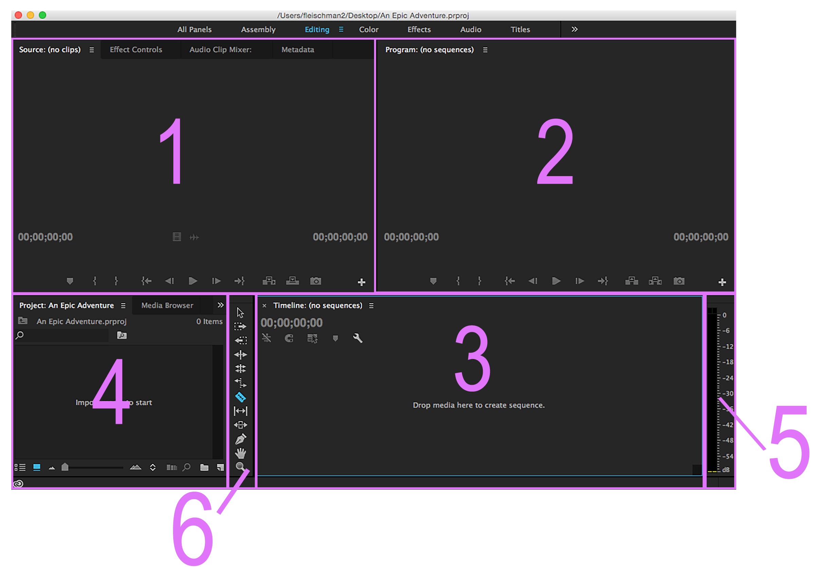
-
Source Monitor: The Source Monitor is in the top left corner of the interface. This is where you will decide the start and end of your clips, or the in and out points. You will have much more footage than you will put in your timeline, so this panel helps you cut out the specific parts you want.
-
Program Monitor: The Program Monitor is to the right of the Source Monitor in the top right corner of the interface. This shows exactly what your viewer sees of your project: your finished show. When you play your project from your timeline, the video is displayed here.
-
Timeline: The Timeline is directly below the Program Monitor in the bottom right corner of the interface. The Timeline is a graphical view of your movie from beginning to end. This is where you construct your movie by dragging clips and audio from the Source Monitor and Project Pane. The Timeline is sometimes referred to as your sequence. When you play what is in your Timeline, it will appear in the Program Monitor.
-
Project Pane: The Project Pane is to the left of the Timeline in the bottom left of the interface, directly below the Source Panel. This is where all your media and projects are stored, along with copies of your sequences.
-
Audio Meters: The Audio Meters are directly to the right of your Timeline. Right now it just looks like a black bar, but when you play a clip, the levels in the audio meters will move to show your decibel levels (dB).
-
Tool Bar: The Tool Bar is directly to the left of your Timeline. This is where you can access all of the different tools in Premiere Pro. We will go over tools in detail later in the manual.
Resetting the Workspace
If you ever mess up your workspace a lot and want to go back to the original settings, you can easily do this from the Window Menu.
Window > Workspace > Reset To Saved Layout
Now all of your monitors will go back to the default sizes and positions.
Importing Media
How to Import Media
Importing Media into Premiere Pro does not mean you are actually bringing the media into your project file, but rather you are pointing to where the media is on your computer. It is important to keep your media files in the same location while editing your Premiere project. Always store any video and audio files to a folder on your computer or hard drive rather than import files directly from an SD Card.
Switching Computers While Editing?
If you know you will be editing your project from multiple computers, it's best to keep your media and Premiere project saved on an external hard drive! This will prevent any "Offline Media" messages indicating that media you originally imported can no longer be found when working from different computers.
-
Navigate to File > Import
-
Navigate to the folder with your video and audio files. For our workshop, we will locate the Class Files titled "premiere-class-files.zip" - make sure to unzip this class file before importing.
-
Select either the entire folder or individual media files you want to bring in to your project. To select multiple files, hold down Command or Control while selecting each file. To select all files within the folder, click Command + A on a Mac, or Control + A on Windows.
-
Click Import. It will take a few seconds to load all of the media. You should see a dialog box showing you the progress of your import.
Once the media is imported, you will see either the folders or individual media files in the Project Pane. Premiere Pro will preserve your file structure after importing, so you will see organized folders that you can open.
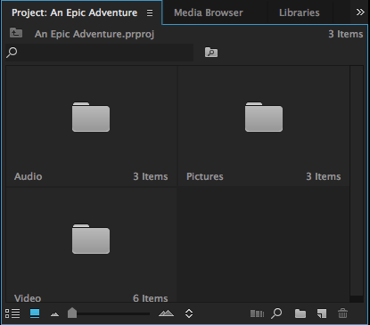
-
To open a folder, double-click on the folder, and it will open in a different window.
Previewing Imported Media
Each clip will have the title of the file in the bottom left corner and the duration of the clip in the bottom right corner.
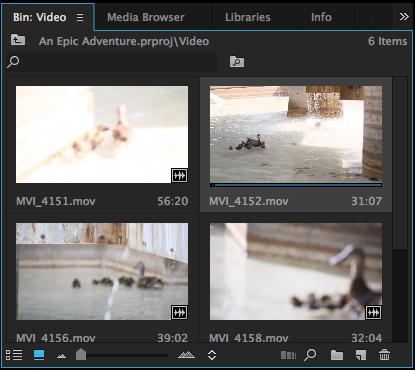
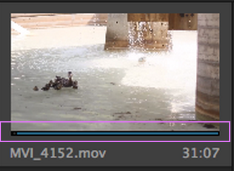
You can preview your clips by scrubbing over them with your cursor. When you click on a clip in the Project Pane to select it, you will notice a blue bar with a gray slider appear at the bottom of the clip image. Clicking on the gray slider and dragging it across the clip allows you to preview your clip and quickly see what footage your clip contains.
Icon View vs. List View
Some people like to view their media files as icons, and others prefer a list instead. Luckily, Premiere Pro gives you either option.
In the bottom left corner of the Project Pane, you will see a highlighted box with an icon image To the left, you will see a box with a list image. To view your footage as a list, click on the list box.
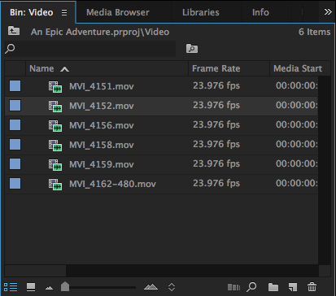
Right next to the list and icon boxes, you will notice a slider with mountains next to it. This allows you to increase or decrease the size of your media display in the Project Pane. Clicking and dragging the slider will make your media files change in size in either the list or icon view.
Renaming Media
Your footage will automatically be imported with the file name, which is often a generic number sequence. You can easily rename your footage in Premiere Pro to facilitate the editing process.
-
Click on any clip to select it.
-
Double-click in the bottom left corner of the clip over the generic name.
-
Rename the file and click Enter or Return on your keyboard.
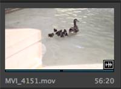 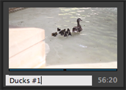
Organizing Media with Bins
Bins are simply folders to organize your footage. We already have three bins, Audio, Video, and Photos, based on the file structure we imported. Now, let’s create a new bin for anything extra we might create, in order to better organize our footage.
-
To add a new Bin, click the folder box in the bottom right corner of the Project Pane, next to the magnifying glass. A new Bin will appear in your Project Pane with the title “Bin 01” highlighted so you can rename it right away.
-
Click on the title and Rename it anything that makes sense to you and your project.
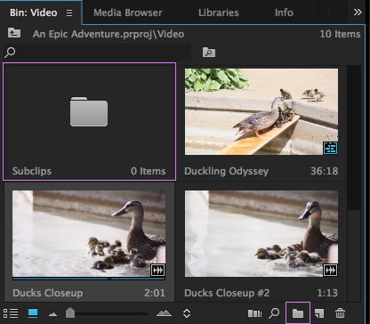
Searching for Clips
You will often have much more footage than you need imported and there will be a lot of files to sort through. Using the Search Bar to look for clips can be helpful to quickly find specific clips you need.
-
Near the top of the Project Pane, click in the search bar next to the small Magnifying Glass.
-
Type in a word or number that has been assigned to a clip as part of the name. If they are numbered, for example, search for the number of the clip you want to find, like "3".
-
As you type, Premiere will begin filtering through media files with that word or number.
The Timeline
The Timeline is the panel where all of the editing takes place! The Timeline is composed of two sections: Video Tracks and Audio Tracks. These Tracks allow us to "layer" videos, titles, graphics, and/or audio clips to create a more dynamic project.
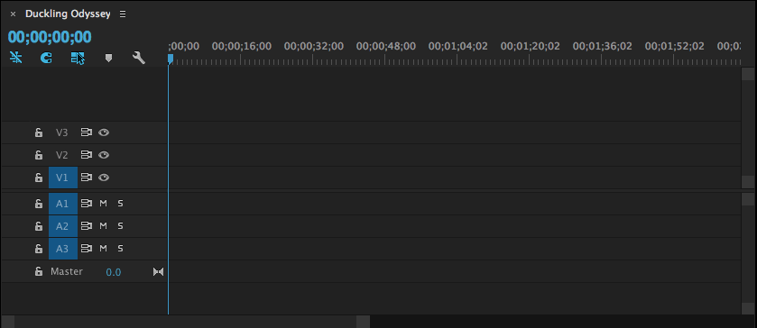
Sequences
Within the Timeline you add, edit, and assemble media clips within what is called a Sequence. A Sequence is automatically created for you using the settings of your media when you first drag and drop files from the Project Pane to the Timeline. This Sequence is named after the the name of the first clip that is dragged in but you can rename it to anything else.
In Premiere Pro, you can create more sequences, although this isn't necessary for basic projects. Learn more about creating sequences in the Advanced Tools section towards the end of this manual.
Adding Media to the Timeline

-
Navigate to the individual media files within the Project Pane.
-
Click and hold any file(s) (To select multiple files, hold down Command or Control while selecting each file. To select all files within the folder, click Command + A on a Mac, or Control + A on Windows).
-
Drag the file(s) over to the Timeline.
Clip Mismatch Warning
If for any reason your Sequence setting do not match your media clip settings, Premiere Pro will ask to change the Sequence Settings. Click “Change sequence settings” so they match your footage settings. This is the most basic way to move clips into a sequence.
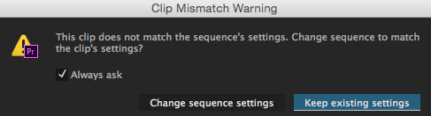
-
While the tracks aren't specified the first time you drag in media to the Timeline, later on in the project if you want to bring in more media, make sure to drag it to the correct Track. For example: If you try to bring in an audio file to a Video Track, it won't allow you to until you hover over an Audio Track.
Using Timecodes in the Source Monitor
What if we want a specific part of a media clip to be used in our Timeline? The Source Monitor gives you a thorough look at your selected media and enables you to make extremely precise selections.
The right bottom corner of the panel tells you the time duration of the whole clip. (If you have an inpoint and outpoint selected, it tells you the time of that subclip.) In the bottom left corner, you can see the timecode. This depends on where the yellow scrubber is at on your clip.
An example of a timecode would be 00;05;36;20. This reads 5 minutes, 26 seconds, and 20 frames.
-
Double click on the media file that you want to show up in the Source Monitor from the Project Pane.
-
Scrub through the clip until the timecode at which you wish to start your selection. At this timecode, mark an inpoint by pressing the “i” key on the keyboard or by pressing the inpoint button in the Source Monitor.
-
Scrub through again, until the timecode at which you wish to end your selection. At this timecode, mark an outpoint by pressing the “o” key on the keyboard or by pressing the outpoint button in the Source Monitor.
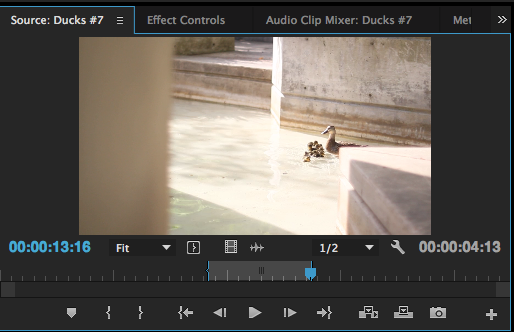
-
Click the “Go to Inpoint” button and press the Spacebar to see the footage you will be inserting into the timeline to make sure it is what you desire.
-
Click and drag the video from the Source Monitor into your Timeline.
Creating Subclips
Sometimes when you are working with a very long clip it would be easier to use it in small sections, much like what we did with the previous exercise. You can create a subclip and have just that section saved to refer back to without scrubbing through the entire length of the longer footage.
-
Double click on the media file that you want to show up in the Source Monitor from the Project Pane.
-
Mark an inpoint and outpoint as mentioned above.
-
Navigate to Clip > Make Subclip
-
In the title box, name the Subclip and click OK
-
The Subclip should now appear in the Project Pane, ready for you to drag onto the Timeline to use!
Navigating the Timeline
The Blue Timeline Marker

The Blue Timeline Marker indicates what part of your project (which exact frame) will be viewed on the Program Monitor. It can also serve as a great guide for cutting and zooming into specific areas of the project.
Zooming In and Out
Knowing how to zoom in and out of your media clips within the Timeline can be very helpful when making detailed edits, such as making cuts with the Razor Tool.

-
To Zoom In and Out of clips on the Timeline length-wise, drag either end of the bottom grey scrollbar inwards or outwards. You can also click on the + and - keys on your keyboard.
-
To Zoom In and Out of clips on the Timeline height-wise, drag either end of the side grey scrollbar upwards or downwards. You can also click on Command +/Command - keys on Mac or Control +/Control - on Windows. This is helpful when editing audio clips to see the audio levels throughout a single clip or between different clips.
Playing/Pausing Clips
While you may use the buttons offered at the bottom of the Program Monitor, simply using the Spacebar to play or stop is most effective. Your project will begin playing from wherever the Blue Timeline Marker is located.
Basic Editing Tools and Techniques
Now that you can import footage, navigate through the panels and create subclips, we will start looking at the more in-depth editing that can take place within the Timeline.
Selection Tool
Trimming/Expanding Media Clips

Sometimes during the editing process, you may decide that some clips that are already in the Timeline need to be longer or shorter.
-
Click on a clip in the Timeline so it is highlighted.
-
Hover over either edge of the clip. Notice how there is a red arrow bracket; that means the clip can be shortened or elongated.
-
While the red arrow is visible, Click and drag the edge of the clip to the right or left.
Gaps and Overwriting
Trimming a clip may leave a gap in your Timeline, do not forget to move the other clips accordingly or click on the empty space and click Delete or Backspace to remove it.
Be careful when making a clip longer with this method, if you overlap other clips on the timeline you will overwrite them.
Deleting Media Clips
During the video process some clips need to be cut because of time constraints or because they just don’t make sense for the narrative any more.
There are two main ways to delete material: a cut delete and a ripple delete. Both have benefits, and it is up to the creator to decide which to use and when.
Cut Delete: This edit cuts and leaves a blank space.
-
Click on a media clip.
-
Click the Delete key on Mac or Backspace key on Windows.
Ripple Delete: This edit does not leave a blank space, but rather it puts to two closest clips together.
-
Choose a clip in the middle of two other clips.
-
Click Option + Delete on Mac or Alt + Backspace on Windows.
Adjusting Speed
In Premiere Pro, you can speed up or slow down the motion of a clip.
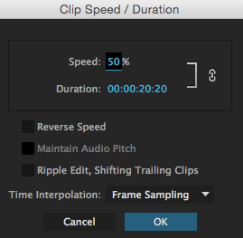
-
Select a clip in your Timeline.
-
Right-click on it and select the Speed/Duration option. A dialog box will appear for you to modify the speed settings of that particular clip.
-
In the Speed section, change the speed to either a percentage or specific duration.
-
Select “Maintain Audio Pitch” if you do not distort the sound of your clip.
-
Select OK. Now you can play your clip in the timeline and see/hear the difference in speed.
Razor Tool
While creating videos, there may be times when you want to place a new clip in the middle of a pre-existing clip, in order to clarify or enhance the narrative.
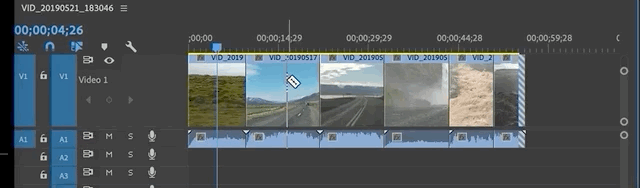
Basic Audio Editing
Audio can make or break a video. In this next part of the manual, we will be exploring different ways to change the audio of the clips. Keep in mind that this is just the basics. There are many more ways to edit audio in Premiere Pro. If you are interested, check out some LinkedIn Learning tutorials online to learn more.
Unlinking Audio and Video Tracks
Videos with audio are automatically linked when brought into the Timeline. This means that any trimming or cuts meant for one affects the other. Unlinking allows for audio or video to be deleted in order to replace it with other video or audio, such as background music.
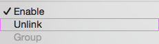
-
Right click on the a track and select Unlink from the menu that pops up.
-
Delete or move either the video or audio clip as needed for your project.
-
Feel free to bring in other video or audio to suppliment the deleted or moved clips.
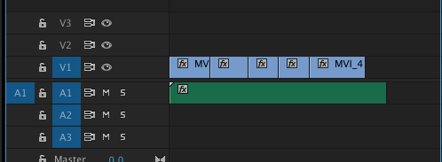
Your timeline would end up looking something like this.
Adjusting Audio Levels
Within the Timeline
Adjusting audio within the Timeline is the most straightforward approach. This allows us to change the overall volume of each clip.

-
Within the Audio Track, expand the track height-wise by tugging on either end of the the side grey bar until you see a white line in the middle of the audio clip.
-
Drag the middle white line up or down to increase or decrease the overall audio levels of the clip.
-
While the clip is playing you can move the white line up and down to make the best audio levels decisions.
Within the Source Monitor
For more detailed audio level editing we can utilize the Effects Control tab within the Source Monitor. This allows for precise decibel control and several points of audio changes within a single clip.
-
Double click on the audio clip in the Timeline to view it in the Source Panel.
-
Click on Effect Controls within the Source Monitor.
-
Under Audio, navigate to Volume
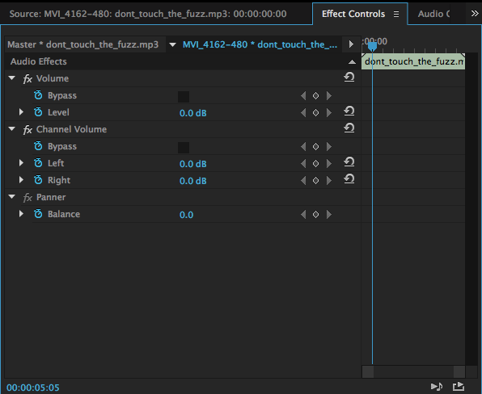
-
Make sure to click the stopwatch next to Level to turn keyframes off, in order to raise the whole level of the track. Otherwise, if your Timeline Marker is anywhere but the beginning, a keyframe will be established and your audio will only be at that volume at that point.
-
Change the decibel level by either entering a number or dragging over the current number from side to side to increase or decrease the current number.
- If you are interested in more detailed audio editing with keyframes, check out the "Advanced Tools" section at the end of this manual.
If you're curious as to what the other audio effects within the Effect Control do:
- Volume: This effect can make the whole video louder or softer depending on which value is put for the decibel level.
- Channel Volume: This effect can change the stereo sound in either the left or the right speakers.
- Panner: This effect changes the sound from one side to the other. Think of like a car zooming past or a bell curve, it starts quietly on one side of the speakers then gets louder equal on both, then it exits on the other side quietly.
Titles
Adding Titles
Throughout the filmmaking process there are times where you would like text to come up on the screen. You may want to have credits to showcase the talent in your film, or you would like an opening title. In Premiere Pro you can do all of these things with titles. Titles can be over a black screen or you can put them over video footage.
After creating a title, make sure to consider the following:
-
After you've created your title, you will see that a new clip has been created within the Timeline in the Track above your video clip. With the Selection Tool you can shorten or extend the length of this title clip and move it to other parts of your project if needed.
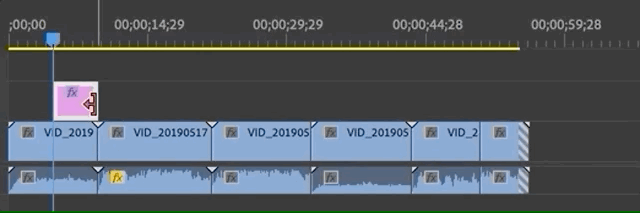
-
To move your title within the frame of your video, make sure to use the Selection Tool. If you try to move the title within the frame with the Type Tool, you'll just keep making more titles.
Editing Titles
To change the size, font, color and alignment, you will need to open the Essential Graphics panel. This panel provides pre-made titles that you can drag and drop into your project, as well as a place to edit existing titles.

- Select the title you want to edit from your Timeline
-
Click on the Graphics Workspace option from the top of the interface to reveal the Essential Graphics panel. You can also go to Window > Essential Graphics to open it.
-
From the top of the Essential Graphics panel, click on Edit
-
Change any settings as you find necessary. To get a better idea as to what each option edits, simply hover over any of the buttons to reveal their names.
There are many ways you can edit your title, but the most popular can be found under the Align and Transform, Text and
Appearance sections. Many of these options should look familiar if you've worked with other Adobe products, Google docs, or Microsoft Word.
I Can't Edit My Title!
If you notice that even though you are making changes within the Essential Graphics panel, but aren't seeing the changes being applied to your title, you may not be on the correct tool.
Make sure you are on the Selection Tool before making any edits. If you are on the Type Tool and accidently double-clicked on the Title to edit the text, you will need to highlight the entire text before any changes can be made.
Transitions
Premiere Pro has many different transitions for both the audio and video that can be found within the Effects panel. As the name suggests, here is where you can also find different video and audio effects to apply to parts or all of your project.
Video Transitions
Adding a Video Transition at the beginning or end of your project, or between clips in the middle of your project can make it feel more dynamic and professional.
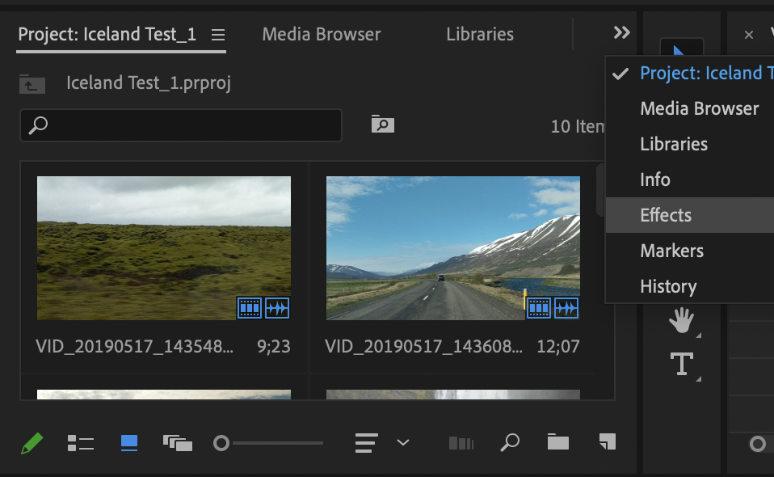
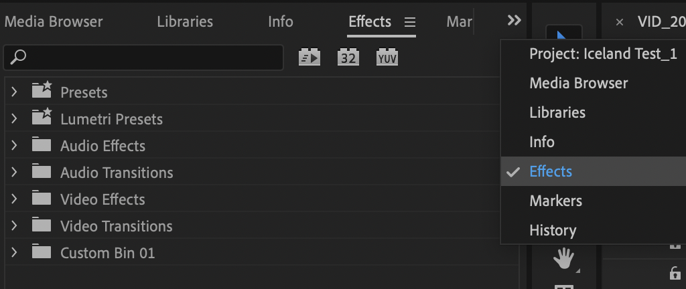
-
Click on the Effects tab within the Project Pane. If you can't see it, click on the double arrow from the top of the panel to reveal more options, and click Effects.
-
Navigate to the Video Transitions folder and click on the arrow on the left to expand it.
-
You should now see more subfolders for each general Transition. Expand one that interests you.
Subtle Transitions Are Usually Best
While Premiere offers many different options for transitions, it's always best to keep Transitions simple. Unless you are looking to resemble an early 90s aesthetic or add some comedy to your project, stick to Transitions found within the Dissolve subfolder.
-
Click and drag a Transition of your choice to the either the beginning or end of any clip, or between two clips on your Timeline. You may need to zoom into your clip if it doesn't allow you to add the Transition.
-
Once zoomed into your applied Transition, you can increase or decrease it's length of time within the clip by dragging an edge of the box it created.
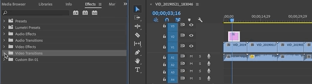
Audio Transitions
While there may be less Audio Transitions to choose from compared to Video Transitions, simply adding an Audio Transition to the very beginning and end of your entire project can make a huge difference.
-
Click on the Effects tab within the Project Pane. If you can't see it, click on the double arrow from the top of the panel to reveal more options, and click Effects.
-
Navigate to the Audio Transitions folder and click on the arrow on the left to expand it.
-
Expand the Crossfade subfolder to reveal three Transition options.
-
Click and drag any of the transitions to either the beginning or end of any clip on your Timeline. Unless you have a trained ear to listen for audio differences, all of the options basically add the same effect. You may need to zoom into your clip if it doesn't allow you to add the Transition.
-
Once zoomed into your applied Transition, you can increase or decrease it's length of time within the clip by dragging an edge of the box it created.
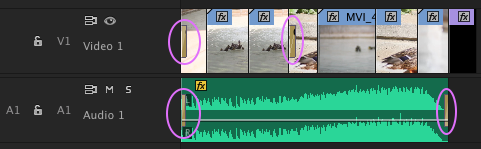
Exporting
Now that we are all finished with our project, it is time to render and export our video!
Exporting A Premiere Video
-
Click once on the Timeline.
-
Go to Sequence > Render In to Out and then Sequence > Render Effects. Rendering ensures that all components of your project will be included in the exporting process.
Depending on your project length and number of effects, the rendering process may take a while! DO NOT wait until the very last minute to render and export your project.
-
Navigate to File > Export > Media... You will be greeted with an exporting dialog box. For the most part, you won’t need to change a lot.
-
Under the Format section, change it to whatever your project instructions tells you. If no specific guidance is provided, H.264 or Quicktime are always great options for a high quality video that isn't too large of a file size. H.264 creates a .mp4 file, while Quicktime creates a .mov file.
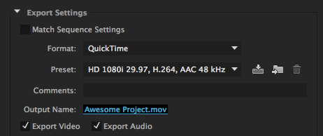
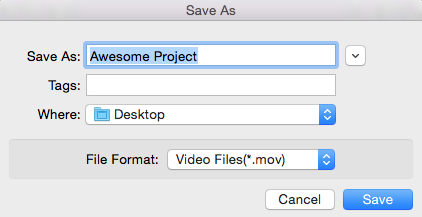
-
Under the Output Name section, click on the blue clip name to rename your project and choose the saving location. A “Save As” dialog box will appear.
-
Rename your project to an appropriate title and confirm that it is saving to the correct folder location.
-
Unless your project guidelines state otherwise, you should keep the rest of the settings as they are for a basic project. But always confirm with your instructor if there are other settings you should change.
-
Click Export. Congratulations! You now have a completed Premiere Pro movie project.
Exporting An Entire Premiere Project (Packaging)
If you plan to work on your Premiere project from more than one computer and you don't have an External Hard Drive, it will be a good idea to create one folder with your premiere project file and all of the video and audio files so you can upload it to Google Drive or another cloud-based service. You will then be able to download this folder to your new work station and continue with you project with no worries of missing files. Luckily, Premiere let's you do this relatevely simply:
-
Go to File > Project Manager.... A dialog box will appear, giving you some options for packaging your project.
-
Under Resulting Project, select “Collect Files and Copy to New Location”.
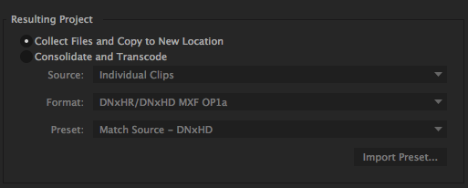
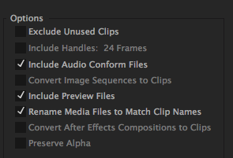
-
Under Options uncheck “Exclude Unused Clips” as we want all our footage to transfer to this location. Keep "Include Audio Conform Files", "Include Preview Files", and "Rename Media Files to Match Clip Names" selected.
-
Under Destination Path, click Browse... and choose a location that makes sense to you and can locate later.
-
When you have changed these settings, click OK.
-
Navigate to the location on your computer you selected and you will see a folder titled after your project. Here you will see your project, along with all the footage. This folder can now be transferred or copied to another location.
Troubleshooting
My Media Disappeared! What Do I Do??
As mentioned before, your media needs to stay in the same location in order for Premiere Pro to be able to find and work with it after importing. If you open your project and are greeted by the message below, your current computer needs help locating the media files you used in your original project. Once you can locate that media, your project should be the same as the last time you saved it.

Reconnecting Offline Media
-
Create or find a folder and place your Premiere Project and all of your media files (video and audio). Make sure this folder is named or renamed to something related to your project.
-
In Premiere Pro, within the "Link Media" message showcased above, select one media clip. If you closed out of this pop-up, select all of your media from your Timeline, right-click, and select "Link Media".
-
Make sure that "Align Timecode", "Relink others automatically", "Use Media Browser to locate files" and "Preserve interpret footage settings" are all selected.
-
Click Locate and find the clip from the folder you saved it in earlier and select OK.
Because "Relink others automatically" was checked, Premiere Pro will automatically reconnect all of the clips that were within the Link Media pop-up.
Advanced Tools (Not Taught In Workshop)
In this section, we will go over a few more advanced editing techniques.
Adjusting Preferences
Preferences allow you to change specific setting in Premiere Pro. Usually, the default settings will be sufficient, but it is good to know what they are.
-
Select the Premiere Pro menu.
Premiere Pro > Preferences > General...
A Preferences window will appear with the general settings. One important setting to note right away is the Auto Save. You can set the automatic save to whatever duration you would like. This can be very helpful if you are someone who forgets to save often.
-
Select Auto Save in the left side of the Preferences Window.
-
The default setting is every 15 minutes. You can change this setting a different amount of time, just make sure Automatically Save Projects is checked.
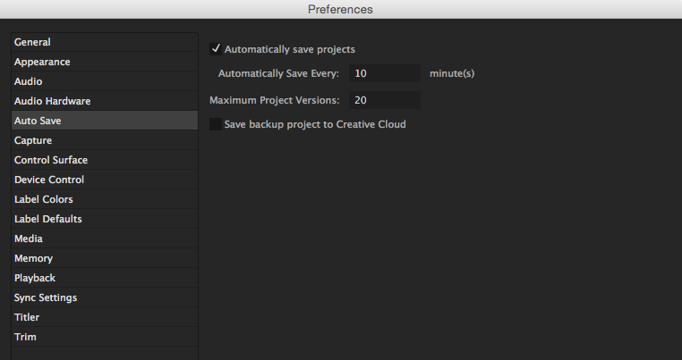
-
Click OK to close the Preferences Window and save your changes.
Creating More Sequences
Creating additional Sequences for a project can be helpful for larger projects that need more organization. For example, if you are creating a documentary, it might be helpful to create a Sequence for each day's footage and bring in those sequences to organizie your final draft rather than have one file with hundreds of clips that may make organizing a bit more complex.
-
Navigate to File > New > Sequence. A box should appear.
-
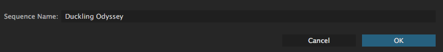
Name your new sequence something that makes sense to you and your project. If you know you have specific settings for your video, you can select them here. However, Premiere Pro is smart enough to automatically tailor its Sequence settings to the settings of your video clips and photos.
-
Accept the choices and click OK.
Using Timeline Markers
On the clips in the timeline we can create notes on the clips called markers. In Premiere Pro we can create these markers at a set timecode. This is helpful for organization and for when you are cutting together footage. This can be a marker for the sequence or a specific clip. To make it a clip marker remember to select the clip before pressing "m".
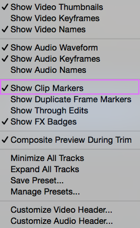
-
Navigate to a point in the clip you would like to create a comment marker. Click on the clip.
-
Click the wrench in the upper left hand toolbar and make sure that Show Clip Markers is checked.
-
Press M on your keyboard.
-
In the dialog box called Comments you can add notes to yourself about this part of the project. Notice how the time of the marker is noted.
More Editing Tools
Insert Edits
Adding clips into the middle of Timeline video sequence can get tedious if you can only click and drag the clips to move them, so data isn’t lost. This is another way to move material from the Source Monitor to the Timeline. This type of insertion is non-destructive; it will just move all the clips over from where the clip is inserted.
-
Choose a clip to bring into Source Monitor.
-
Mark an inpoint and outpoint.
-
Make sure the blue scrubber is at the point in the sequence where you want to insert the clip.
-
Click the Insert Clip button in the Source Panel.
Roll Edits
A roll edit can be used to lengthen one clip and shorten another so that they don’t add or take away length to a video project, or to be about the same or exactly the same amount of time.
-
Bring a clip into the Source Panel, make in and out points.
-
Bring it into the Timeline.
-
Do the same with another clip.
-
Click onto the Rolling edit tool, the fourth one down from the top of the toolbar or press “N” on the keyboard.
-
Make the second clip long and the first clip shorter by pulling left with the roll edit, or pull right to do the opposite.
Ripple Edits
Let’s say that you have two clips with a big gap between them where there is no action, about 5 seconds or so. You could shorten the clips and then move all the footage over, or you could perform a ripple edit. This editing tool moves an edit point, causing the rest of the timeline to move the same amount to compensate. That way there are no gaps, and all your footage is moved over with the edit.
-
Navigate in your Timeline to a smaller clip that you know has more footage than is being shown in the Timeline.
-
Click the Ripple Edit tool in the toolbar, the icon third down, or press “B” on the keyboard. Hover over the end of a clip and notice how the arrow is now yellow instead of red.
-
Move a clip’s endpoint out so it is longer; notice how the timeline adjusts to the edit.
Using the Slip Tool
Sometimes during video editing, the timing is right, but the in and outpoints of a clip are wrong. In this situation the slip tool is the best edit to use. This keeps the exact timing that you have in the Timeline, but plays with the in and outpoints of the video.
-
Zoom into the beginning montage by using the “+” key.
-
Select one of the clips to play with the in and outpoints.
-
Click onto the Slip tool in the toolbar, the 7th icon down from the top, or press “Y” on the keyboard.
-
Click on the part you have selected and move the tool right and left. See the in and outpoints changing? Once you feel like you have a good clip, let go of the mouse.
Using the Slide Tool
There might be times when you have three clips together, and you really like the middle clip, but you wish that it happened sooner. You could delete everything and move it, or you could use the slide tool so you do not create a gap in either direction of the middle clip.
-
Click onto the Slide tool, the icon 8th down on the toolbar or press “U” on the keyboard.
-
Click onto the clip you would like to stay the same. You can move it either way. Notice how the clips around adjust so it is the same timing.
Using Keyframes
Underlying the basic animation and effect functionalities of Premiere Pro are keyframes. A keyframe marks the point in time where you specify a property, such as position, opacity, or audio volume. To create a change in a property over time, you set at least two keyframes—one keyframe for the value at the beginning of the change, and another keyframe for the value at the end of the change. Premiere Pro then reads these marks and changes the clip’s properties over the time period that you have marked. The best way to learn key frames is to jump right in, so let’s start!
There are two ways to add keyframes: The Effect Controls panel and the Timeline panel. The Effect Controls panel displays all effect properties, keyframes, and interpolation methods at once. Clips in a Timeline panel show only one effect property at a time. In the Effect Controls panel, you have complete control over keyframe values. In a Timeline panel, you have limited control. For example, you can’t change values that use x and y coordinates, such as Position, in a Timeline.
Exercise: Adjusting Opacity using Keyframes
There are times where creators like to add video over top of each other to create a desired effect. To do this we can use keyframes and the timeline.
-
Move a clip to a video two track.
-
Take any clip and match the beginning up with the end of the clip before in the video 1 track, leaving a large amount of overlap.
-
Click onto the clip then go to Effect Controls. Drop down the triangle by opacity.
-
Scrub to the beginning of the clip; wherever the cursor is on the selected clip it will change the opacity of that spot and make a keyframe all by itself.
-
Bring the opacity down to 40. You can type this into the percentage.
-
Move the cursor to another spot later in the clip and make the opacity 60 percent. Notice how the line between the keyframes change?
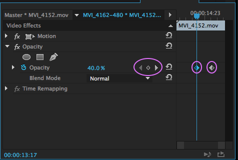
-
Play from the beginning of the timeline. Make sure that the clip you would like in the end is at the top of the timeline opposed to the bottom.
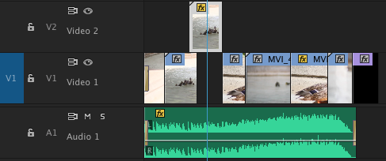
Overwrite Edits
Sometimes you just want to replace footage that you have with different footage, but you want it in the same spot. Instead of deleting the footage and performing an insert, you can just perform an overwrite edit. This will paste the new clip over the original clip in the Timeline.
Keep in mind that this edit will only overwrite for the length of the new clip, so you may end up with a piece of the original clip at the end of the overwrite, if you are overwriting in the middle of the video.
-
Navigate to the Project Pane and pull a clip into the Source Monitor.
-
Mark an inpoint, not an outpoint.
-
Put the red marker about three quarters of the way into another clip in the Timeline.
-
Press the overwrite button in the Source Monitor or drag the clip to the red line in the Timeline.
Replace Edits
While an overwrite edit covers up any clip you put it over and maintains the new clip's length, a replace edit cuts the new clip to be the exact same amount of time as the clip replaced, in the same place. This is useful if you have another take that you want to put into a video, but you want it to be the exact same time as the previous clip.
When doing this, make sure that the inpoint that you need is marked in your source panel.
-
Take a clip into the Source Monitor and make in and outpoints.
-
Place any clip onto the end of our video, make sure it is only about 5 seconds long.
-
Grab a hold of the clip in the Source Monitor while holding down the option key and drag it over your clip.
-
Drop the video onto the clip. See how you now have the clip in the exact same time span?
Using Color Correction
Color Correction allows you to fix some clips that would otherwise be unusable.
-
Select the Effects tab in your Project Pane. You will see many different options for Effects. You can click on any of the arrows to the left of the effect headings and see many more options.
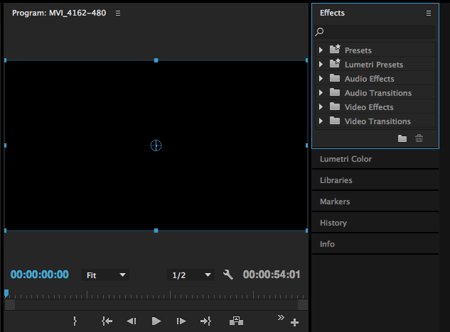
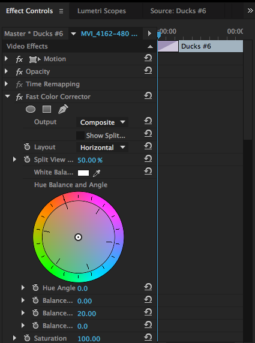
-
Click on the dropdown arrow in the Video Effects heading.
-
Select Color Correction and you will see multiple options underneath this option as well.
-
Double-click on Fast Color Corrector.
-
Navigate to the Source Monitor and select the Effect Controls tab.
-
Select the clip you want to edit in the Timeline and make sure that the cursor is over that clip. You will see a window where you can edit the colors of your clip. There will be a big color wheel and many other editing options. The Color Corrector can be used to fix color balance and exposure. We recommend playing around with these options to see how the color and exposure changes in your clip. You will see these changes in the Program Monitor as you adjust them.